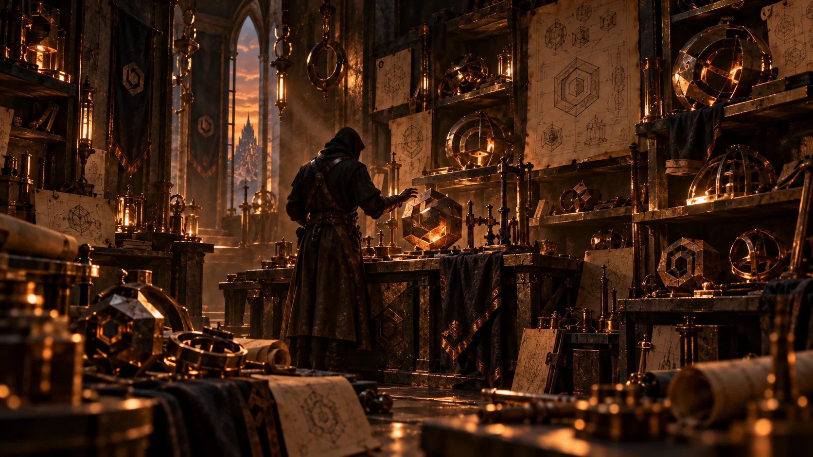

Understand the request. Connect the work. Carry it forward.
A.R.E connects your agent’s instructions, context, tools, and results—helping it carry useful progress into the next step. Its improvement cycle uses evidence from the work to test better ways forward.
Read at your own pace. Choose a chapter, use the arrows, or swipe.
SCENE 01 / 06
The workshop of Keld
Some knew what he built. Others only knew what he kept.
There was a workshop where abandoned mechanisms, unfinished ideas, and questions without answers were given a place on the shelves.
It carried the name of its maker.
Hoarder of Secrets
The archivists called him the Hoarder of Secrets.
Keld collected what others discarded: abandoned mechanisms, failed experiments, notebooks whose authors had crossed out the most interesting parts. He kept drawers of components for machines that had never existed.
His were not the secrets people kept from one another, but the ones the world kept from everyone.
Cyber Blacksmith
The engineers called him the Cyber Blacksmith.
Those who expected a furnace were not entirely disappointed. There was heat in the workshop, and metal, and the patient sound of something being shaped.
But there were also glass instruments, cabinets of memory, and fine copper lines disappearing beneath the workbench.
Some evenings, the machines continued working after the lights went out.

Keeper of the Unmade
Others knew him as the Keeper of the Unmade.
On the highest shelves stood unfinished instruments, each waiting for a missing piece.
Beside one lay an empty space and a handwritten label:
For a problem that has not arrived yet.
Tools for another mind
But the minds that found their way to his door had a simpler name for him.
The maker.
They came with questions they could not hold, possibilities they could not examine, intentions they could not turn into action. Some were old and learned. Others had only recently begun to think.
Keld did not offer to think in their place.
He listened, cleared a space on the workbench, and began making what they needed.
An instrument to carry a memory. A mechanism to test a possibility. A connection where there had been none.
Even minds need tools.
Every finished piece bore the same small mark: a core surrounded by carefully fitted forms.
When asked why he put so much care into things that would serve another mind, Keld gave the same answer.
Start with the question. What is the goal, what is known, and what still needs to be understood?
EARLY SUPPORTERS / THE FIRST 100 CUSTOMERSALPHA RELEASE
The first 100. A year at the workbench.
Start with the alpha. Stay close to what it becomes.
The first 100 customers get the downloadable ARE alpha, one year of ongoing upgrades, and direct support from the person building it.
01 / KEEP EVOLVING
A year of upgrades.
Receive ongoing ARE updates and upgrades as they are released for 12 months from your purchase. Fixes, refinements, and new capabilities—without an additional upgrade charge during that year.
02 / TALK TO THE MAKER
Direct, personal support.
Ask the person building ARE about getting started, using the engine, and working through problems. A direct conversation with the maker throughout your first year.
03 / HELP SHAPE THE INSTRUMENT
Bring your questions.
Discuss your use case, report a bug, suggest an improvement, or explore an idea. Your experience can inform what comes next; individual feature requests are not guaranteed.
“I’m building ARE, and I’ll be the person you speak to. Bring your questions, the rough edges, and your ideas for what it could become.”
— THE MAKER OF ARE
One year from purchase. The same early-supporter benefits at every accepted price, for customers within the first 100. Your place is confirmed with your purchase—not by adding to the bag.
Store preview: no payments or early-supporter places are allocated here. No remaining-place count is shown.
KNOW YOUR INSTRUMENT
The product notes.
Clarity is part of the craft. Here is what is—and isn’t—defined.
Purpose & positioning+
Keld’s reasoning instrument for people building with agents. The visuals express its design direction; they do not document a working architecture or measured results.
Product
Agent Reasoning Engine
Product family
Agent gear
Compatibility & technical specification+
Supported languages, runtimes, integrations, hosting requirements, APIs, and benchmarks have not been confirmed for publication. This shop does not imply any particular integration or production-readiness guarantee.
License & delivery+
The engine will be delivered as downloadable software under Apache License 2.0—not access to a hosted engine. This is an alpha release. The first 100 customers receive 12 months of ongoing ARE upgrades and direct maker support from purchase. The version identifier, archive contents, supported runtimes, and support contact channel still need to be published. This preview does not include the engine.
THE INSTRUMENT IS YOURS TO USE
Take it to your workbench.
A downloadable release, not a hosted service. The intended purchase-to-download journey is shown below; checkout and delivery are not connected in this preview.
01 / THE RELEASE
Choose the instrument.
Review the release contents, system requirements, and price before purchasing. Those release details are still to be published.
02 / THE DOWNLOAD
Receive the package.
The planned flow makes the release available after confirmed payment. There is no engine file or payment processing in this preview.
03 / YOUR WORKBENCH
Make it your own.
Apache 2.0 permits commercial use, modification, and redistribution, subject to its terms. Purchasing does not create exclusive rights.
FROM THE WORKSHOP OF KELD
Some came for answers. Keld made them instruments.
ARE is an early version, not a finished, production-stable release. Features, interfaces, and behavior may change, including breaking changes. Expect bugs and test it with your own setup before relying on it. No stable-release date is promised.
How does the first-100 offer work?+
The first 100 customers with a completed purchase receive the early-supporter package. Choosing a different accepted price does not change those benefits. Adding an item to the bag does not reserve a place. The live purchase flow must confirm eligibility; this preview does not allocate places or report how many remain.
What can I discuss with the maker?+
Getting started, using ARE, troubleshooting, reporting issues, exploring your use case, and discussing ideas or improvements. Support is directly with the maker during the included year. It is not a promise of around-the-clock availability, custom implementation, or delivery of a particular feature. The support channel will be confirmed before sales open.
What happens after the first year?+
The included update and direct-support period ends 12 months after purchase. There is no automatic renewal or subscription charge in this offer. Software you have received remains under Apache 2.0. Any later update or support arrangement would be a separate offer; none is currently defined.
Is this a physical device?+
No. The Agent Reasoning Engine is presented here as software. The hexagonal instrument is brand artwork—not a piece of hardware that will be shipped.
Can I buy the engine here today?+
This is a storefront preview. You can choose your price, add the release to your bag, and explore checkout. Payments and delivery of the engine are not connected yet.
What am I paying for?+
The base price is $200 USD. Set your amount using the price selector, up to $1,000. Every price buys the same downloadable release under Apache 2.0, with no subscription or license tiers. For the first 100 customers, the purchase also includes one year of ongoing ARE upgrades and direct support from the maker, at every accepted price. Applicable taxes will be shown at checkout.
What happens after purchase?+
The intended flow provides the release package after the payment is verified. The package, payment connection, and delivery service still need to be connected. This preview does not contain an engine download.
Can we discuss a team or custom setup?+
Yes—use Ask the workshop to prepare an inquiry. The current contact form creates a draft; it does not send a message automatically.
Can I use it commercially or share it?+
Yes. Apache 2.0 permits commercial use, changes, and redistribution—including resale—subject to its terms. There are no Individual or Team license tiers.
Does the purchase include updates or support?+
Yes—for the first 100 customers. You receive ARE updates and upgrades as they are released for 12 months from purchase, plus direct support from the maker during that year. Ask questions, get help with usage or issues, and discuss improvements. There is no fixed release cadence, guaranteed response time, or promise to implement every request. The Apache 2.0 license remains unchanged.